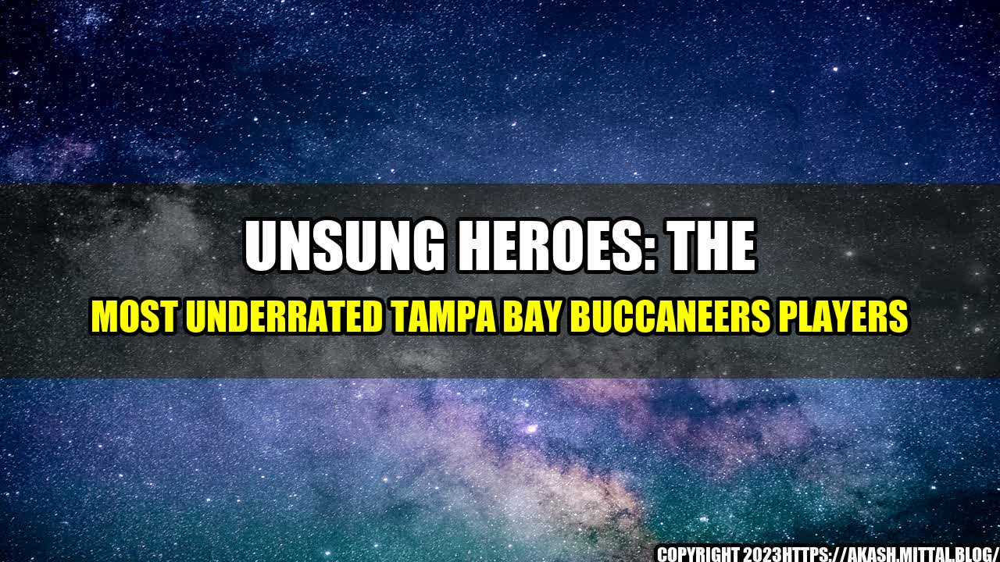

Unsung Heroes: The Most Underrated Tampa Bay Buccaneers Players

Every football team has their stars, the players that most people talk about and cheer for. But sometimes, the true heroes of a team are the ones that don't get quite as much attention. That's certainly the case for the Tampa Bay Buccaneers, who have some truly underrated players that are crucial to their success but often overlooked.
Let me tell you the story of Ali Marpet. When he was in college, he played for a Division III school (Hobart College) and wasn't exactly on anyone's radar. In fact, he went undrafted in the 2015 NFL Draft and most people thought he was too small and too inexperienced to make it in the NFL. But the Tampa Bay Buccaneers saw something in him and took a chance on him, drafting him in the second round.
Since then, Marpet has become one of the most reliable players on the team. He's started every game he's played in and has been a crucial part of the offensive line. He's gone from being a relative unknown to being a player that the Bucs can't imagine playing without.
If you need some proof of just how important some of these underrated Bucs players are, look no further than the stats. Here are just a few examples:
- Ndamukong Suh: In 2019, Suh had 2.5 sacks, 14 quarterback hits, and 41 total tackles. He was also instrumental in the Bucs' run defense, helping to limit opponents to just 73.8 rushing yards per game.
- Lavonte David: David has been a consistent force on the Bucs defense for years. In 2019, he had 3 interceptions, 4 passes defended, 72 total tackles, and a forced fumble.
- Chris Godwin: While Godwin is starting to get more attention, he's still somewhat underrated in the grand scheme of things. In 2019, he had 1,333 total receiving yards and 9 touchdowns.
- Donovan Smith: As the team's left tackle, Smith is one of the most important players on the offensive line. In 2019, he started all 16 games and allowed just 4 sacks.
- Ryan Jensen: Jensen is the team's center and arguably one of the most underrated players in the entire league. He's known for his toughness and grit and has started every game since joining the Bucs in 2018.
An
Unsung Heroes: The Most Underrated Tampa Bay Buccaneers Players
and Case Studies
While stats can be great for showing just how important a player is, sometimes it's the personal anecdotes and case studies that really drive home the point. Here are a few:
- Ndamukong Suh: While Suh may have a reputation for being a bit of a dirty player, his teammates love him. According to Bucs linebacker Devin White, "Suh is absolutely the most team-first, unselfish guy I've ever met in my entire life. If you get to know him, he's all about the team."
- Lavonte David: David has been with the Bucs since 2012 and has consistently been one of the team's best players. He's always been overlooked, but his teammates know just how important he is. As he said in an interview, "I'm not really worried about being underrated or overrated. As long as my teammates know what I bring to the table, that's all I really care about."
- Chris Godwin: Godwin's work ethic is legendary among the Bucs. As fellow receiver Mike Evans said, "Godwin is a grinder. He works his butt off day in and day out. He's always putting in the extra time and effort."
So what can we take away from these underrated players on the Tampa Bay Buccaneers? Here are a few key points:
- Stats don't tell the whole story: While the stats for these players are certainly impressive, there's more to their value than just what you see on paper.
- Teamwork is key: These players may not be the most well-known on the team, but they're all about the team. They're willing to put in the work for their teammates and that's what makes them invaluable.
- Being underrated isn't always a bad thing: These players may not get quite as much attention as some of their teammates, but that doesn't mean they're any less important. They're happy to fly under the radar and just do their job.
References and Hashtags
References:
Hashtags: #TampaBayBuccaneers #NFL #UnderratedPlayers #Football #UnsungHeroes #AliMarpet #NdamukongSuh #LavonteDavid #ChrisGodwin #DonovanSmith #RyanJensen
Article Category: Sports
Curated by Team Akash.Mittal.Blog
Share on Twitter Share on LinkedIn